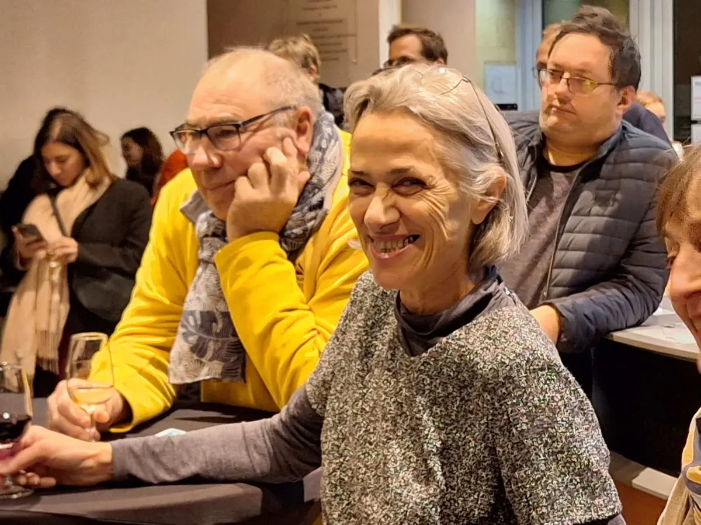
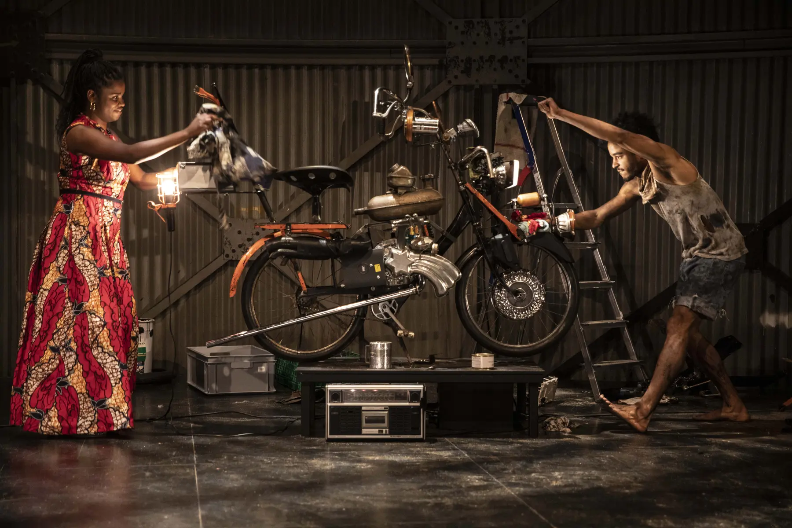
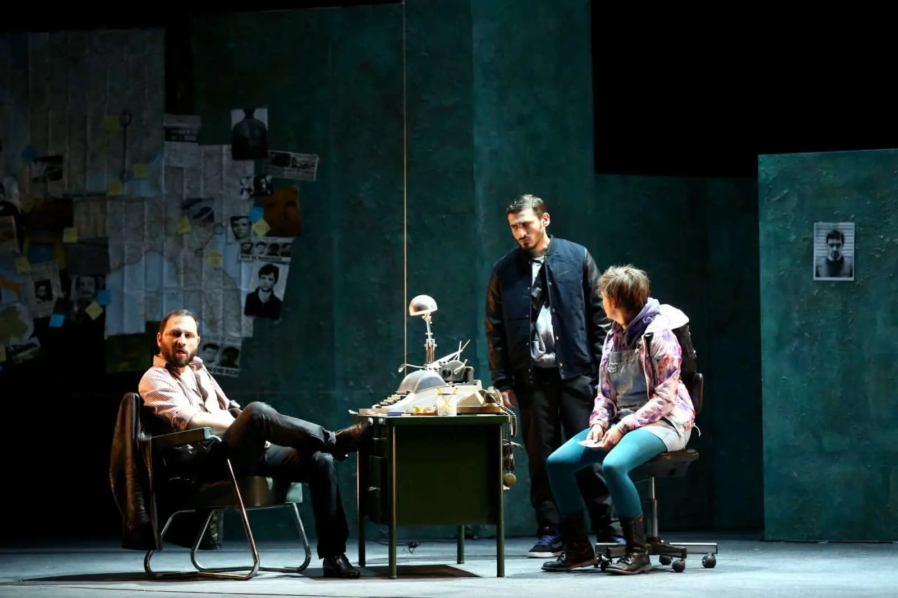
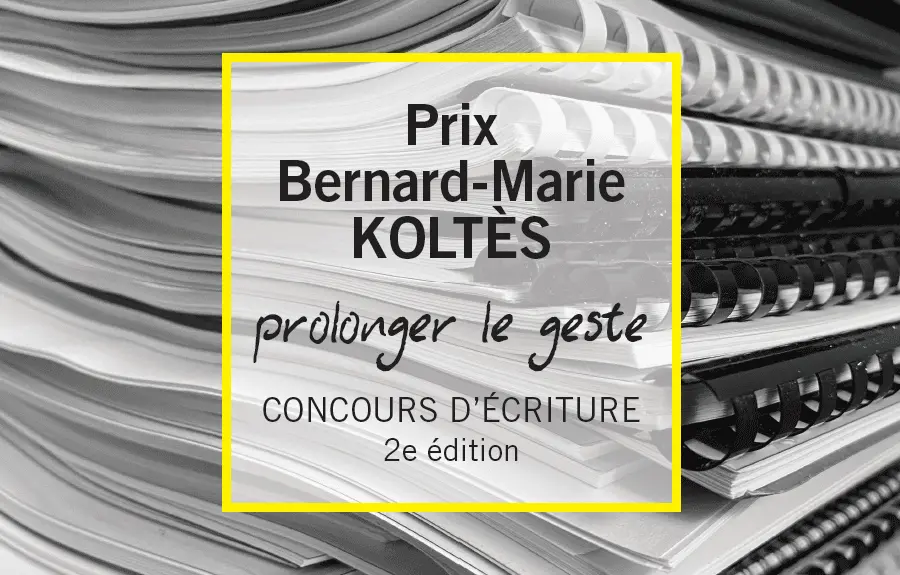
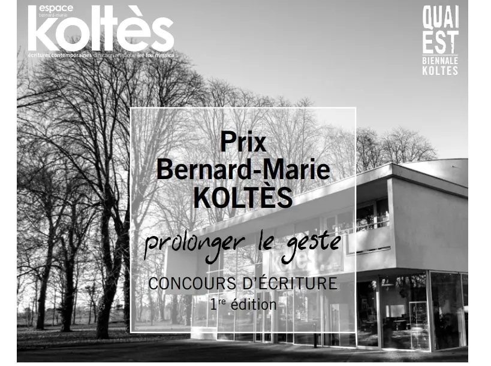
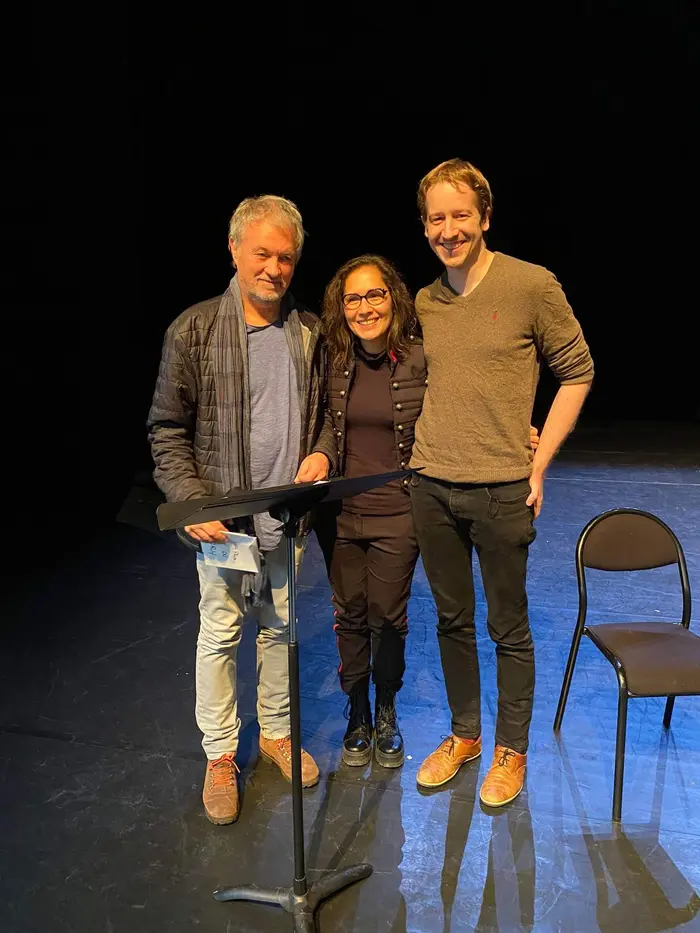
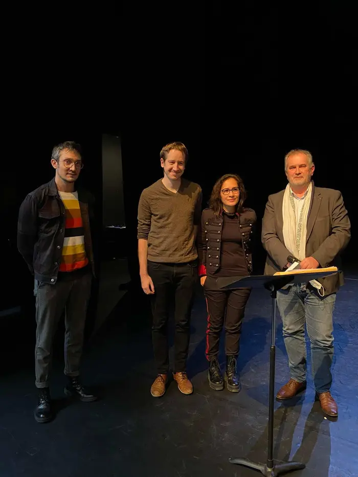
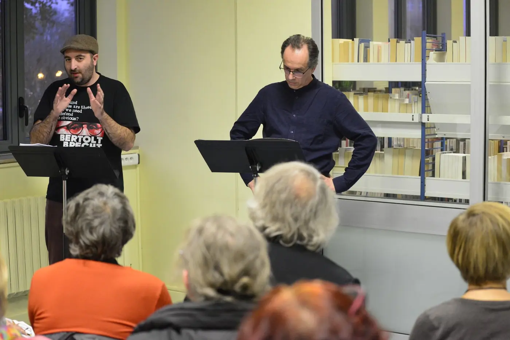

Actu
Annonces, programmes, résultats et retours en images : l’histoire récente de Quai Est, de la plus récente à la plus ancienne.
Toutes les actualités de l’association, de la plus récente à la plus ancienne. Les textes sont des résumés rédigés pour ce site ; chaque carte renvoie à la page complète de l’édition concernée.
2025

3e Prix Koltès : le marathon de lectures
Quatre textes en finale, lus à voix haute dans les lieux partenaires de Metz puis à l’Espace Koltès, avec vote du public et remise des prix.
Lire
Le programme de la 7e Biennale est en ligne
Spectacle musical d’ouverture, créations, lectures, concert de chants du monde, cinéma : tout le détail des dix rendez-vous de « Voyages ».
Lire
Du 14 au 28 novembre 2025 : Biennale Koltès #7
Deux semaines de théâtre, de musique, de danse et de cinéma pour voyager dans l’univers de Koltès. Affiche et annonce de l’édition.
Lire2023

Prix Koltès #2 en quelques images
Le second Prix évolue vers davantage d’accompagnement des jeunes auteurs : retour en images et en vidéo sur l’édition.
Lire
C’était la 6e Biennale « Qui ? Koltès ! »
De l’inauguration à l’Opéra-Théâtre à la soirée de clôture à Montigny-lès-Metz : l’édition 2023 en images.
Lire
6e Biennale : de nombreux artistes attendus
Rendez-vous le vendredi 17 novembre 2023 à 20 h à l’Opéra-Théâtre de Metz pour l’inauguration.
Lire
Programme complet de la 6e Biennale
Soirée inaugurale, création Utopie\Viande, marathon de lectures, Tabataba et soirée de clôture : le programme en cinq volets.
Lire2022

Prix Koltès #2 : l’appel à textes est lancé
Deuxième édition du concours : cent jours pour écrire une fiction dramatique, avec dépôt des textes avant le 24 septembre 2022.
Lire
Retour sur le Prix Koltès 2021, en chiffres
100 jours pour écrire, 147 textes reçus, 9 lieux, 4 finalistes : le bilan de la première édition.
Lire2021

Résultats du Prix Bernard-Marie Koltès 2021
Alexandre Horréard remporte le Prix du jury avec Utopie\Viande ; le Prix du public est partagé avec Emmanuel Gavard (Les Endormis).
Lire
Marathon de lectures : les 19 et 20 novembre 2021
Quatre textes lus dans quatre lieux de Metz puis à l’Espace Koltès, avec un vote réservé aux spectateurs ayant entendu les quatre lectures.
Lire
Le jury du Prix se réunit à l’Espace Koltès
Sous la présidence de François Koltès, le jury désigne les quatre textes finalistes le 7 octobre 2021.
LireNaissance du Prix Bernard-Marie Koltès « Prolonger le geste »
Quai Est et l’Espace Bernard-Marie Koltès lancent un concours d’écriture dramatique pour soutenir les jeunes écritures contemporaines et francophones.
Lire2019

Programme du 27 mars au 6 avril 2019
Second volet de la 4e Biennale : Roberto Zucco à l’Opéra-Théâtre, La Nuit juste avant les forêts, Dans la solitude des champs de coton, Moi Bernard…
Lire
4e Biennale : « Écritures de l’exil », du 13 au 17 novembre 2018
Le programme complet et la rétrospective en images de l’édition 2018.
Lire